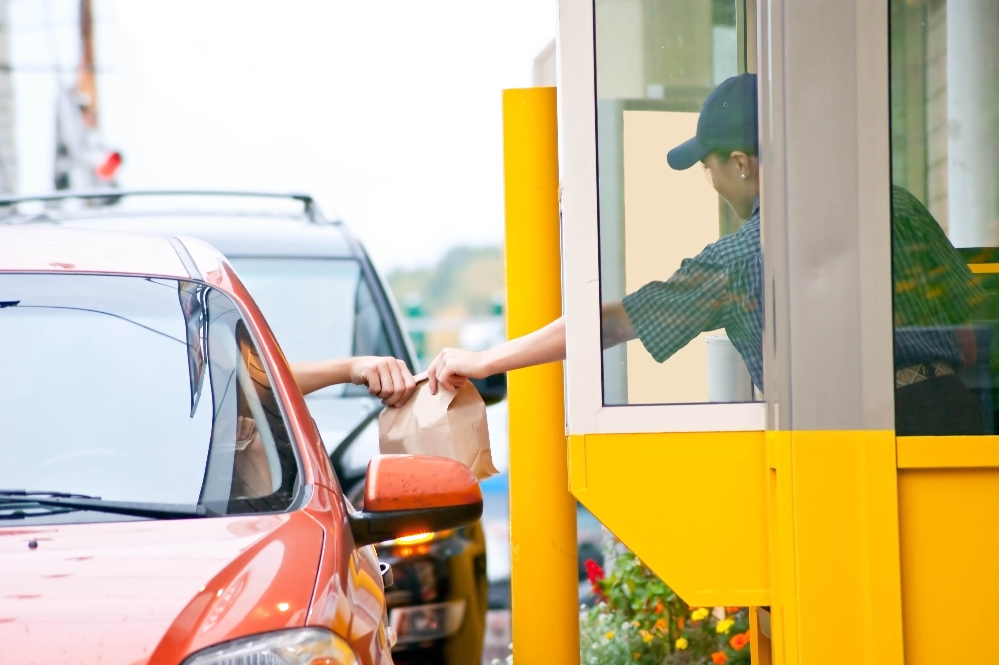

How to Cope - Unhealthy Eating Triggers
I like to nibble on this while I watch TV.
- Avoid eating out of large containers and bags.
- Avoid eating out of large containers and bags.Get yourself a single serving—and that’s all..
- Chew sugar-free gum instead or nibble on non-starchy veggies, like carrot and cucumber, with hummus.
- Watch less TV.
- Eat only at the kitchen/dining room table.
- Knit, ride a stationary bike, use resistance bands, or lift weights instead
I feel lonely
- Contact your friends or family.
- Meet people: take a class, join a team or club, or volunteer.
- Think about adopting a pet
I feel sad/anxious/stressed/mad
- Ease your feelings in healthy ways. For instance, talk with a friend about how you’re feeling before you decide to eat something.
- Remind yourself of your long term weight-loss goals and how indulging in unhealthy treats will not solve anything.
- Try some stress relief techniques, such as meditation, journaling, or drinking herbal tea.
I feel bored
- Find something to occupy you. Engaging in a fun activity can help you forget about the temptation of eating
- Drink a glass of water. Filling up your stomach with some water can help you feel fuller and confirm that you’re not hungry
"This looks or smells tempting"
- At home:
- Keep a supply of healthy items that you like. Make sure they are visible and ready to eat. For instance, keep cut-up veggies in your fridge and a bowl of fruit on your table.
- Don’t keep unhealthy items at home.
- Keep unhealthy items out of sight, or make them hard to reach.
- At work:
- Avoid walking by vending machines and “free” food.
- Keep healthy snacks on hand.
I don’t want to waste food.
- Cook smaller amounts.
- Store the leftovers in the fridge or freezer.
- Remind yourself that your health is more important than a few bites of food